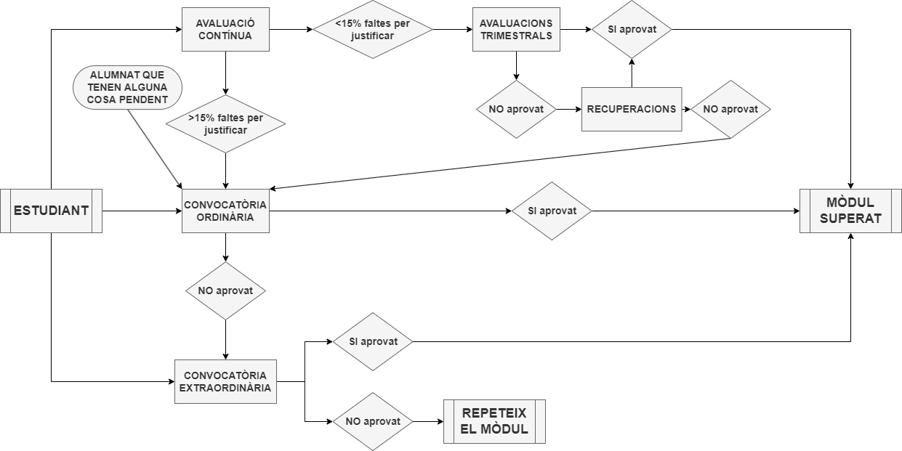

<!doctype html>
<html>
<head>
    <meta charset="utf-8">
    <meta name="viewport" content="width=device-width, initial-scale=1.0, maximum-scale=1.0, user-scalable=no">
    <!-- Page description -->
    

    <!-- Page author -->
    
        <meta name="author" content="Joan Puigcerver Ibáñez" />
    

    <!-- Canonical -->
    

    <!-- Favicon -->
    <link rel="icon" href="../../assets/images/favicon.png" />

    <!-- Site title -->
    
      
        <title>Presentació del mòdul - IABD-SAA: Sistemes d'aprenentatge automàtic</title>
      
    

    
        <link rel="stylesheet" href="https://unpkg.com/katex@0/dist/katex.min.css">
        <link rel="stylesheet" href="https://cdnjs.cloudflare.com/ajax/libs/reveal.js/5.1.0/reveal.min.css">
        <link rel="stylesheet" href="https://cdnjs.cloudflare.com/ajax/libs/reveal.js/5.1.0/reset.min.css">
        <link rel="stylesheet" href="https://cdnjs.cloudflare.com/ajax/libs/reveal.js/5.1.0/plugin/highlight/monokai.min.css">
        <link rel="stylesheet" href="https://cdnjs.cloudflare.com/ajax/libs/reveal.js/5.1.0/theme/white.min.css">
        <link rel="stylesheet" href="../../stylesheets/slides.css">
    

    <!-- Meta tags from front matter or plugins -->
    

 <link href="../../assets/stylesheets/glightbox.min.css" rel="stylesheet"/><style>
    html.glightbox-open { overflow: initial; height: 100%; }
    .gslide-title { margin-top: 0px; user-select: text; }
    .gslide-desc { color: #666; user-select: text; }
    .gslide-image img { background: white; }</style> <script src="../../assets/javascripts/glightbox.min.js"></script></head>

<body>

    
    <div class="reveal">
      <div class="slides">
        <section data-markdown
                 data-separator="^\n---\n$"
                 data-separator-vertical="^\n--\n$"
                 data-notes="^Note:">
          <script type="text/template">
            ## Sistemes d'Aprenentatge Automàtic

### Curs d'especialitazció: Intel·ligència Artificial i Big Data

#### Curs 2024-2025

---

## Horari
__4 hores setmanals__

- Dilluns de 19:00 a 20:50
- Dimecres de 15:55 a 17:45

---

## Professorat

- Joan Puigcerver Ibáñez

    j.puigcerveribanez@edu.gva.es

- Andreas Lloyd

    a.mathewlloyd@edu.gva.es

---

## Unitats didàctiques
### 1r trimestre

- __UD1__: Introducció a la Intel·ligència Artificial
- __UD2__: Estadística
- __UD3__: Manipulació i visualicació de dades
- __UD4__: Regressió


---

## Unitats didàctiques
### 2n trimestre

- __UD5__: Preprocessament de dades
- __UD6__: Classificació

---

## Avaluació i qualificació
- Exàmens (40%)
- Pràctiques (60%)
    - S'han d'entregar en temps i forma.
    - Han de ser originals.

__En cas contrari, la qualificació serà de 0.__

> Per més informació, consulta la <a href="../programacio/" target="_blank">Programació didàctica</a>

---

## Criteris mínims
- Qualificació dels __exàmens__ major o igual a 5.
- Qualificació de les __pràctiques__ major o igual a 5.
- __Superar cada avaluació per separat__.

---

## Convocatòries


---

## Ordinària
- Exàmen de cada avaluació per separat.
- Pot presentar-se tot l'alumnat.
- Es mantenen les avaluacions superades.
- La qualificació de cada avaluació major o igual a 5.

<a href="../programacio/#822-convocatoria-ordinaria" target="_blank">Programació didàctica: Avaluació ordinària</a>

---

## Extraordinària
- Examen de cada avaluació per separat.
- Es mantenen les avalucions superades.
- La qualificació ha de ser major o igual a 5.

<a href="../programacio/#823-convocatoria-extraordinaria" target="_blank">Programació didàctica: Avaluació extraordinària</a>
          </script>
        </section>
      </div>
    </div>
    

    
        <script src="https://cdnjs.cloudflare.com/ajax/libs/reveal.js/5.1.0/reveal.js"></script>
        <script src="https://cdnjs.cloudflare.com/ajax/libs/reveal.js/5.1.0/plugin/markdown/markdown.min.js"></script>
        <script src="https://cdnjs.cloudflare.com/ajax/libs/reveal.js/5.1.0/plugin/notes/notes.min.js"></script>
        <script src="https://cdnjs.cloudflare.com/ajax/libs/reveal.js/5.1.0/plugin/zoom/zoom.min.js"></script>
        <script src="https://cdnjs.cloudflare.com/ajax/libs/reveal.js/5.1.0/plugin/math/math.min.js"></script>
        <script src="https://cdnjs.cloudflare.com/ajax/libs/reveal.js/5.1.0/plugin/highlight/highlight.min.js"></script>
    

    
        <script>
          // Full list of configuration options available here:
          // https://github.com/hakimel/reveal.js#configuration
          Reveal.initialize({
            controls: true,
            progress: true,
            history: true,
            center: true,
            hash: true,

            transition: 'default', // default/cube/page/concave/zoom/linear/fade/none
            // Learn about plugins: https://revealjs.com/plugins/
            plugins: [ RevealMarkdown, RevealNotes, RevealZoom, RevealMath, RevealHighlight ]
          });
        </script>
    

<script id="init-glightbox">const lightbox = GLightbox({"touchNavigation": true, "loop": false, "zoomable": true, "draggable": true, "openEffect": "zoom", "closeEffect": "zoom", "slideEffect": "slide"});
</script></body>
</html>